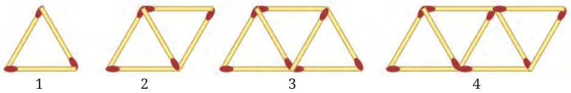
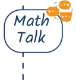
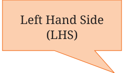
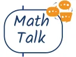

Consider this sequence of matchstick arrangements.

Recall that we have studied this sequence in an earlier chapter.
The figure shows the first 4 matchstick arrangements along with their position numbers in the sequence.
Jasmine decides to make a matchstick arrangement that appears in this sequence, using exactly 99 sticks. What will be the position number of this arrangement in the sequence? To answer this question, it is useful to know the number of matchsticks in each position. We see that
the arrangement at position 1 has \(2 \times (1) + 1 = 3\) matchsticks, the arrangement at position 2 has \(2 \times (2) + 1 = 5\) matchsticks, the arrangement at position 3 has \(2 \times (3) + 1 = 7\) matchsticks, and so on.
So, the n position will have 2n+1 matchsticks. To answer Jasmine’s question, we have to find the value of n such that \(2n + 1\) has the value 99, or,
\(2n + 1 = 99\).
Can you find ways to get the value of n, such that \(2n + 1 = 99\)?

Is it possible to make a matchstick arrangement that appears in this sequence using exactly 200 sticks? A statement of equality between two algebraic expressions is called an equation. Nowadays, when using symbols, we write an equation as two algebraic expressions with an equal sign ‘=’ between them. Here are some more examples of equations:
\(3x + 4 = 7\), \(20 = y - 3\), \(\frac{a}{3} = 50\), \(2z + 4 = 5z - 14\) etc.
The process of finding the value(s) of the letter - numbers for which the equality holds, or for which the value of the Left Hand Side (LHS) of the equation becomes equal to the Right Hand Side (RHS) of the equation, is called solving the equation. As we saw in the matchstick problem, framing an equation using an unknown quantity as a letter - number can help us find its value. \(+ 1 = 99\)

For the weighing scale problems in figures 7.6, 7.7, 7.8, 7.9, 7.10, and 7.11, frame equations by using letter-numbers to denote the unknown weight. For the problem in Fig. 7.6, let us denote the weight of one fried egg as e. Since each slice of bread is 2, we have \(2 + 2 + 2 = 6\) on one side and \(e + e\) on the other side. Since they are equal, we have
\(6 = e + e\), or \(2e = 6\).
For the problem in Fig. 7.7, \(= 4\), and we can denote the weight of one as y. So, we have 16 on one side, and \(4 + 2y\) on the other side. Thus, we have the equation
\(4 + 2y = 16\).
Solve the equations that you frame and check if you get the same value for the unknown weight as you got previously.

Frame 5 equations. Find methods to solve them.